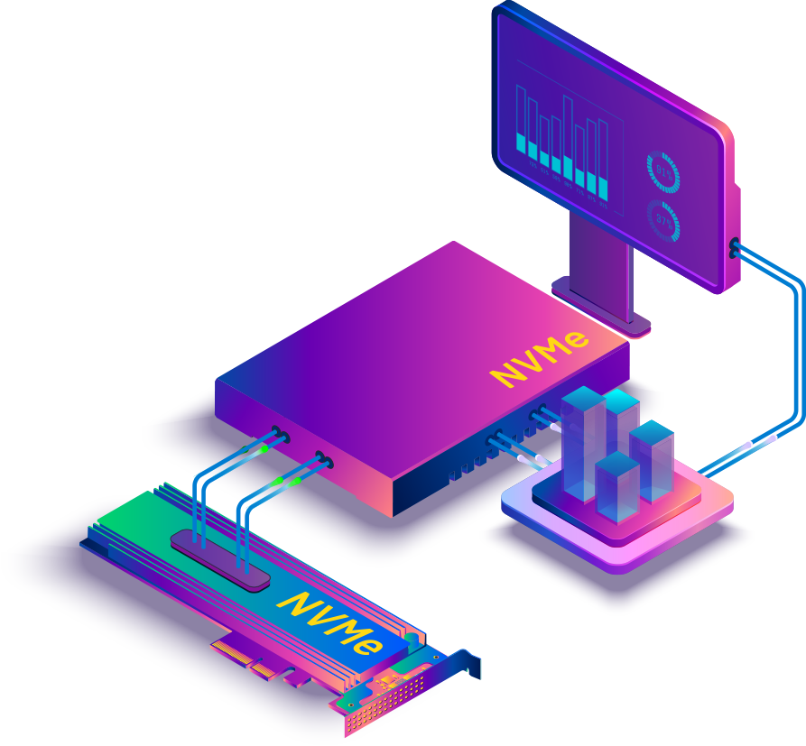
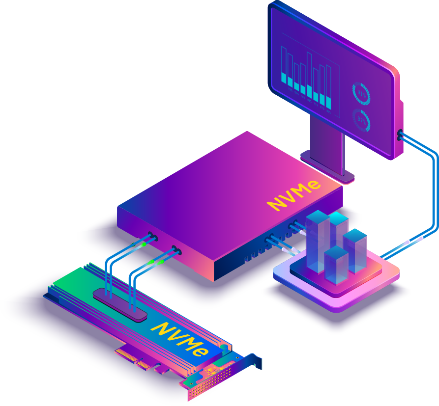

Una variable es un espacio en la memoria, en el cual el programador asigna un valor determinado por el tipo de dato que el lenguaje de programación va soportar, para declararla es necesario saber que tipo de dato la contiene en resumen en seria un tipo de cajon el cual guarda la informacion y nos permite comunicarnos con el pc.
Tipo int: es empleado para almacenar números enteros (sin cifras decimales)
Tipo float: Es empleado para usar numeros decimales
tipo char: permite almacenar un carácter (unidad de texto) o cadena de caracteres.
tipo string: permite crear cadenas de caracteres
tipo bool:permite tomar el valor de verdadero y falso
While:ciclo repetitivo mientras se cumpla una condicion
For:Ciclos repetitivos cuando se sabe la cantidad de veces
If: Sirve para generar condiciones
Los ciclos o estructuras repetitivas, son estructuras que permiten indicar dentro de un programa, que un bloque de instrucciones se ejecutará un número finito de veces
Nos permite llenar una variable con N numeros de datos dependiendo del tipo de variables y asi realizar operaciones con estos, Los vectores son espacios contíguos en memoria, de manera que podemos acceder a sus elementos utilizando el nombre del vector, los corchetes, y la posición.


 
